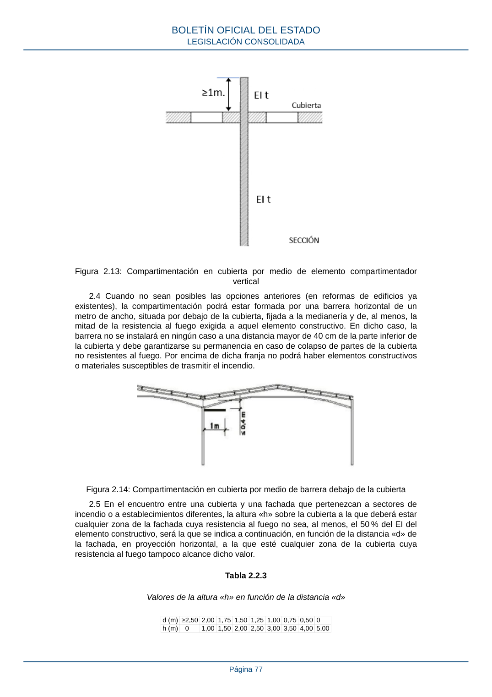

RSCIEI · Página 77 · versión 2025-04-10
SHA256: 85aa0af25d51e5b58d8975a4eefbf76d3f57a8933445cfe814ae9c4818a2e3e7 · página física 77 de 108 · métodos de encabezado
solo si están cotejados.
Formatos: Markdown · JSON de bloques · PDF p. 77 · imagen PNG
Figura 2.13: Compartimentación en cubierta por medio de elemento compartimentador vertical 2.4 Cuando no sean posibles las opciones anteriores (en reformas de edificios ya existentes), la compartimentación podrá estar formada por una barrera horizontal de un metro de ancho, situada por debajo de la cubierta, fijada a la medianería y de, al menos, la mitad de la resistencia al fuego exigida a aquel elemento constructivo. En dicho caso, la barrera no se instalará en ningún caso a una distancia mayor de 40 cm de la parte inferior de la cubierta y debe garantizarse su permanencia en caso de colapso de partes de la cubierta no resistentes al fuego. Por encima de dicha franja no podrá haber elementos constructivos o materiales susceptibles de trasmitir el incendio. Figura 2.14: Compartimentación en cubierta por medio de barrera debajo de la cubierta 2.5 En el encuentro entre una cubierta y una fachada que pertenezcan a sectores de incendio o a establecimientos diferentes, la altura «h» sobre la cubierta a la que deberá estar cualquier zona de la fachada cuya resistencia al fuego no sea, al menos, el 50 % del EI del elemento constructivo, será la que se indica a continuación, en función de la distancia «d» de la fachada, en proyección horizontal, a la que esté cualquier zona de la cubierta cuya resistencia al fuego tampoco alcance dicho valor. Tabla 2.2.3 Valores de la altura «h» en función de la distancia «d» d (m) ≥2,50 2,00 1,75 1,50 1,25 1,00 0,75 0,50 0 h (m) 0 1,00 1,50 2,00 2,50 3,00 3,50 4,00 5,00 BOLETÍN OFICIAL DEL ESTADO LEGISLACIÓN CONSOLIDADA Página 77
